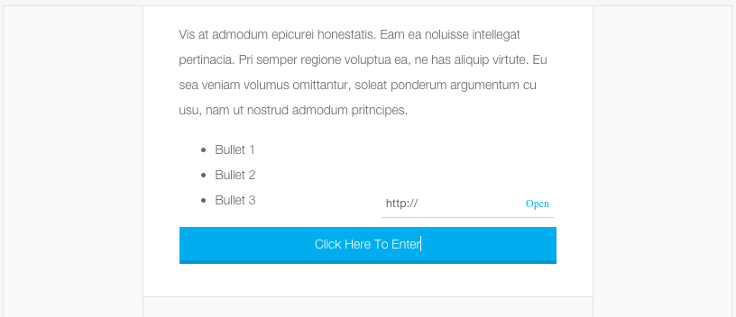

Attribute Reference
This page contains all the custom HTML attributes Crowdskout allows along with examples and images of each.
cs-editable
The cs-editable attribute will take a given element and allow it to be editable. The client
can now change the text within this given element.
Example
<div class="content" cs-editable>
Content you want to be editable.
</div>
Screenshot
cs-format
The cs-format attribute must be used with the cs-editable attribute on the same element.
cs-format allows the text within an element to be customized. The level of customization
depends on which options you pass into the cs-format attribute. cs-format accepts a comma
separated list of options.
Options
Pass in a comma delimited string of the below options to the attribute to allow the end-user to have these editing capabilities on the text wrapped in this element.
h1,h2,h3,h4,h5- Wraps the highlighted text in the given header tagp- Wraps the highlighted text in a<p>tagpre- Wraps the highlighted text in a<pre>tagblockquote- Wraps the highlighted text in a<blockquote>tagbold- Bolds the highlighted textitalic- Italicizes the highlighted textunderline- Underlines the highlighted textjustifyLeft- Aligns the text leftjustifyCenter- Aligns the text centerjustifyRight- Aligns the text rightlink- Turns the highlighted text into a linkplaceholder- Adds an image placeholder at the current cursor positioninsertOrderedList- Inserts an ordered listinsertUnorderedList- Inserts an unordered list
Example
<div cs-editable cs-format="bold,italic">Text</text>
Screenshot
cs-button
cs-button must be used on a link element. It let's the client change the href attribute but it
does not allow the element to be unlinked.
Example
<a href="" class="button" cs-button>Click Here To Enter</a>
Screenshot

cs-link
The cs-link attribute allows the client to change the href attribute or unlink the element. All
<a> tags will be automatically given a cs-link attribute so you don't have to manually add this
attribute anywhere.
Screenshot
cs-placeholder
The cs-placeholder attribute must be added to an <img> tag. This attribute will update the src
attribute on the <img> tag with our own placeholder image.
cs-placeholder also adds image edit/upload capabilities to the placeholder image.
Please set the width and height attributes on the <img>. This will let our clients know which image
size to upload.
Example
<img cs-placeholder width="500" height="350" />
Compiled
<img src="http://app.crowdskout.com/placeholder.png" width="500" height="350"/>
Screenshot
cs-src
The cs-src attribute must be used on an <img> tag. This attribute should be used when the <img> src attribute is a variable, otherwise we will get a 404 error.
If we apply the variable immediately to the src attribute, the browser will fetch it as an image, which will not exist. We first need to parse the variable before setting the src attribute. This is the purpose of cs-src.
Example
<img cs-src="cs::organization-url" />
Compiled
<img src="http://organization.com" />